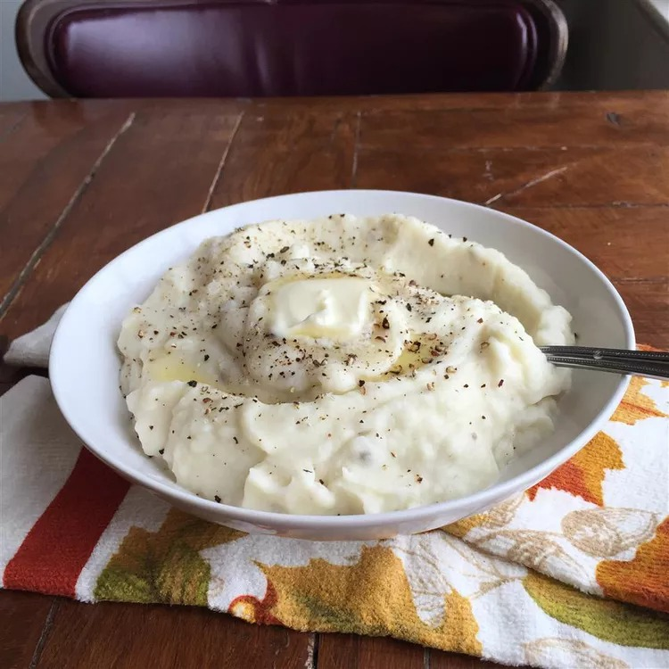

Holiday ONLY Mashed Potatoes

This picture can barely do justice just how amazing this tastes
Description
It is strongly advised to only ever make these mashed potatoes for special occasions and holidays. While these potatoes are to die for and taste as amazing as you could ever ask for, these mashed potatoes are full of heavy cream and butter. With a prep time of 15 minutes and cook time of 25, this is the perfect item to make after you've put the main dish on the stove or in the oven.
Ingredients:
- 5 pounds red potatoes, peeled and quartered
- 1 cup heavy cream
- ½ cup butter
- salt and pepper to taste
Instructions
- Place potatoes in a large pot with enough water to cover.
- Bring to a boil, and cook until fork tender, about 20 minutes.
- Drain, add butter, and mash using a potato masher, ricer or mixer. Gradually beat in the heavy cream.
- Serve hot!